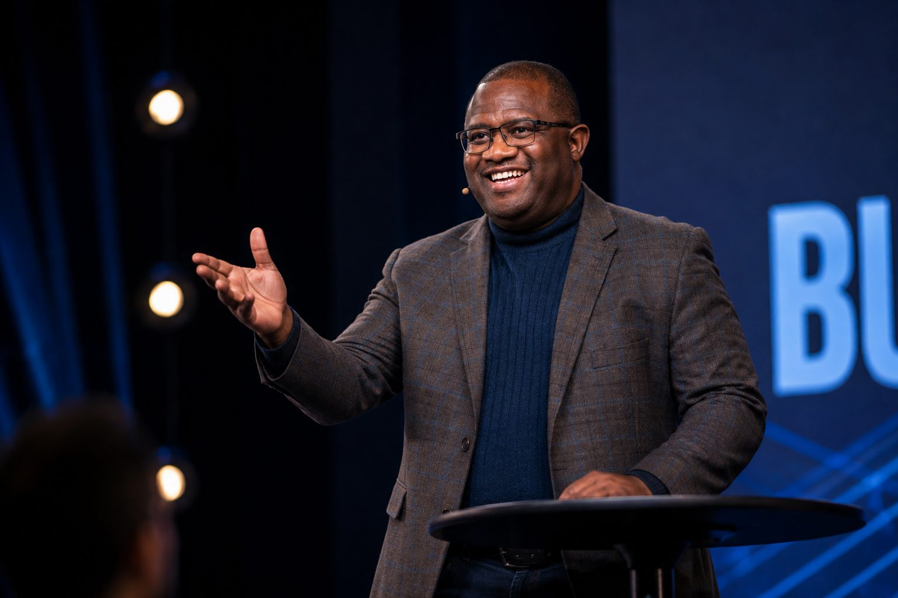

Work With Me
Turn insight into lasting impact.

01
Speaking
Practical Ideas. Meaningful Conversations.
I speak to professional, academic, faith-based, healthcare, and community audiences about the relationships and experiences that shape our individual and collective well-being.
Drawing from my experience in marriage and family therapy, behavioral health, higher education, ministry, and global mental health, I combine research, stories, and practical application to create presentations that are informative, engaging, and relevant to the people in the room.
Speaking engagements may include:
- Keynote Presentations
- Engaging presentations designed to introduce big ideas, challenge assumptions, and provide practical insights audiences can carry with them.
- Conference Presentations
- Research-informed presentations and conversations for professional, academic, healthcare, mental health, and community audiences.
- Church & Faith-Based Events
- Sermons and presentations exploring relationships, mental health, resilience, and the intersection of psychological and spiritual well-being.
- Organizational Events
- Customized presentations for organizations seeking to strengthen relationships, resilience, well-being, and community.
Areas of Focus
- Relationships & Family Life
- Resilience
- Faith & Spirituality
- Mental Health & Well-Being
- Global & Community Mental Health
- Integrated Behavioral Health
- Chronic Illness
- Mental Health Access
Planning an event? Let's talk about how I might contribute.
Invite Dr. Zeph to Speak02
Training & Workshops
From Ideas to Practical Skills.
Sometimes an audience needs more than a presentation. Training and workshops provide opportunities to go deeper—creating space for learning, discussion, reflection, practice, and application.
I develop interactive learning experiences that translate psychological, relational, and behavioral health knowledge into practical tools participants can use in their work, relationships, organizations, and communities.
Training and workshops can be designed for:
- Mental Health & Healthcare Professionals
- Professional learning related to relationships, resilience, integrated behavioral health, chronic illness, family systems, and whole-person care.
- Organizations & Teams
- Practical learning experiences focused on resilience, relationships, communication, well-being, and organizational capacity.
- Schools & Universities
- Training and educational experiences for students, faculty, staff, educators, and other professionals.
- Churches & Faith Communities
- Workshops integrating psychological knowledge with conversations about relationships, mental health, resilience, family life, and faith.
- Community Organizations
- Accessible training designed to strengthen the capacity of people and organizations to support mental and relational well-being within their communities.
Training can be customized based on the goals, audience, setting, and available time.
Areas of Focus
- Relationships & Family Life
- Resilience
- Mental Health & Well-Being
- Faith & Spirituality
- Integrated Behavioral Health
- Community Mental Health
- Chronic Illness
- Training & Capacity Building
Looking for an interactive learning experience for your organization or community?
Request a Training or Workshop03
Media & Interviews
Conversations That Make Complex Ideas Accessible.
I welcome opportunities to participate in thoughtful conversations about relationships, mental health, resilience, faith, families, and community well-being.
As a professor, marriage and family therapist, researcher, educator, and former pastor, I bring an interdisciplinary perspective to conversations about how people relate, adapt, heal, grow, and support one another.
I am available for:
- Podcasts & Interviews
- Long- and short-form conversations exploring relationships, mental health, resilience, faith, family life, and community well-being.
- Panels & Expert Conversations
- Participation in professional, academic, healthcare, faith-based, and community discussions.
- Media Interviews
- Expert perspectives related to my areas of professional, clinical, and research experience.
Areas of Conversation
- Relationships & Family Life
- Couples & Parenting
- Resilience
- Faith & Mental Health
- Global & Community Mental Health
- Integrated Behavioral Health
- Chronic Illness
- Mental Health Access
Interested in having me join your conversation?
Request a Media InterviewGet in Touch
Let's Connect
If you are interested in inviting me to speak, facilitating a training or workshop, or participating in a media conversation, I'd be glad to learn more about what you have in mind.
Prefer email? Write to hello@drzeph.com.